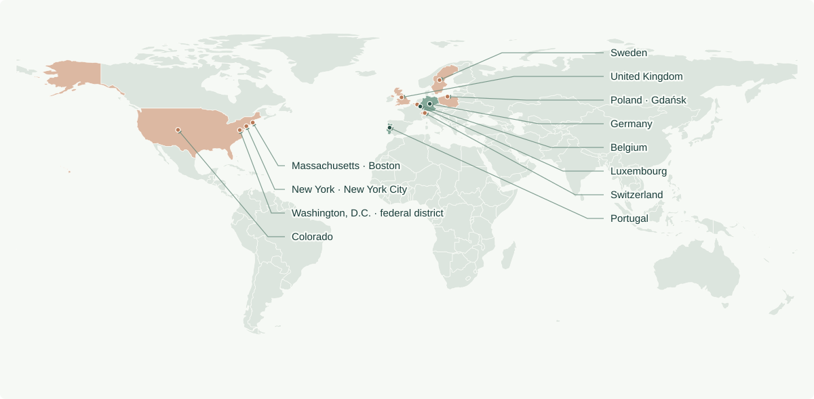
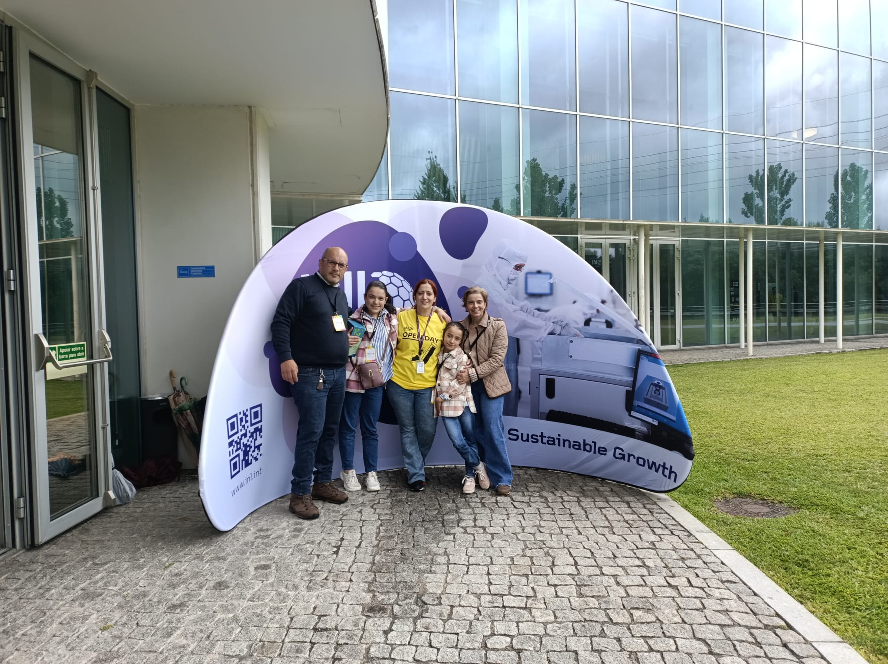
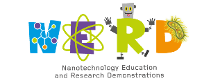
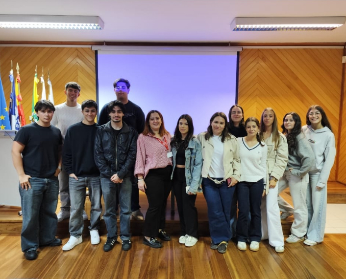
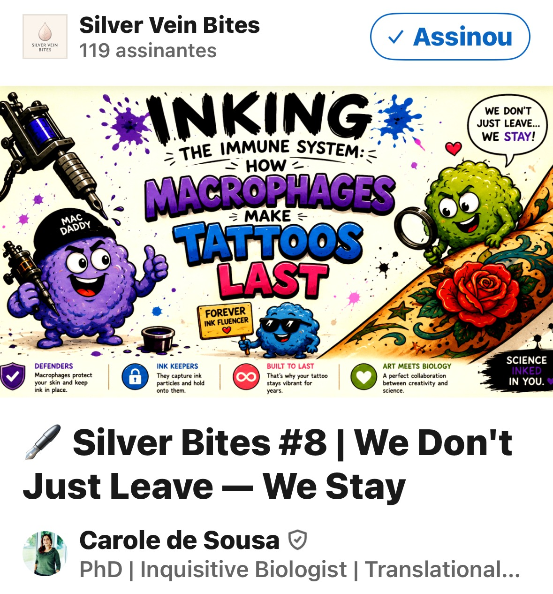
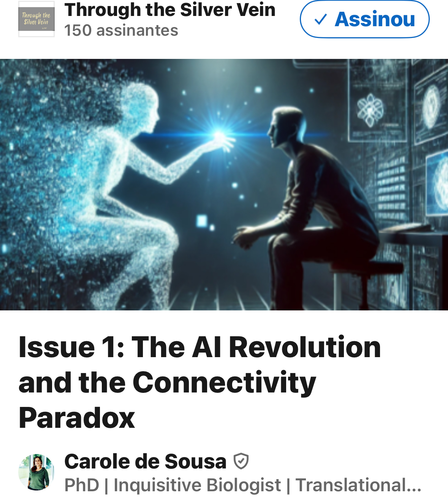
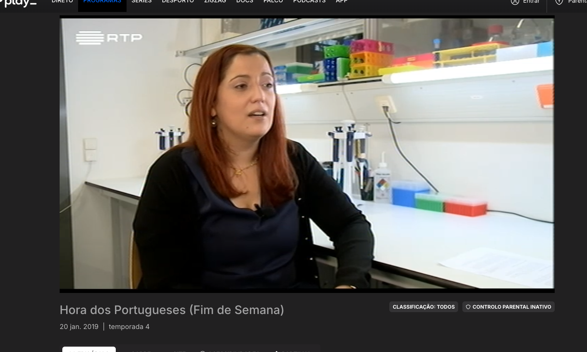
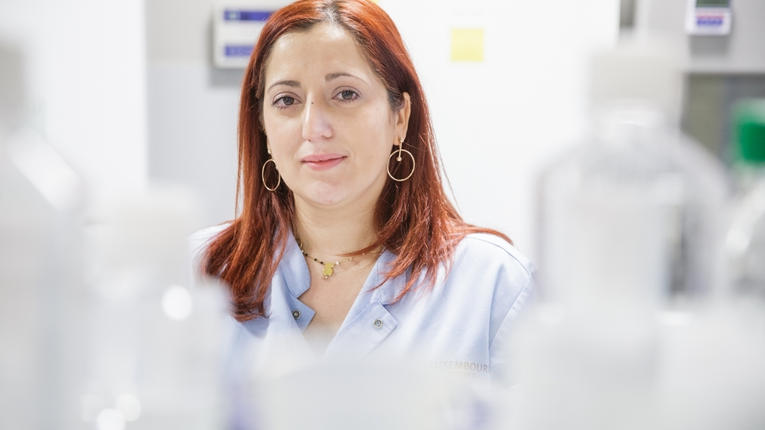
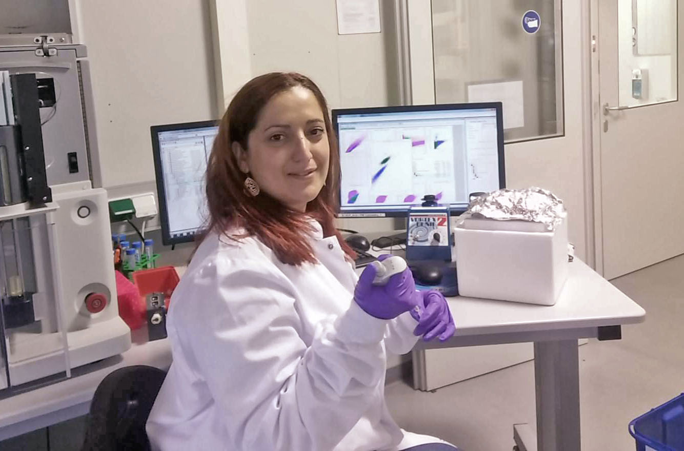
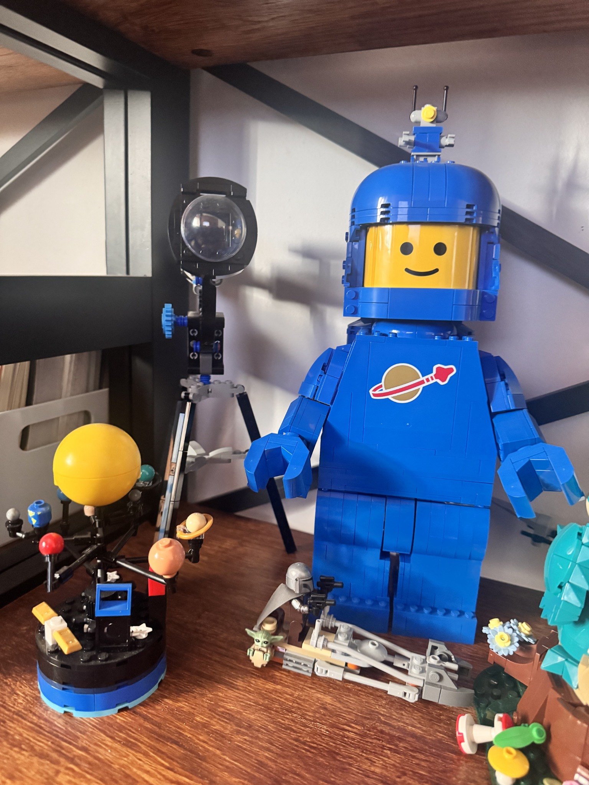

Omics & molecular profiling
Single-cell and single-nucleus RNA sequencing, Drop-seq, spatial transcriptomics, MALDI mass-spectrometry imaging, RT-PCR, and genotyping.
Carole Sousa, PhD
I’m Carole Sousa, PhD. My background spans infection, neuroimmunology, and translational diagnostics. I bring experience with human-specimen protocols, analytical validation, SOPs, and scientific documentation to clinical research, regulatory affairs, and medical and scientific writing, with a focus on medical devices and in vitro diagnostics (IVDs). My aim is to use science in service of humanity, building on fundamental and translational research as I move into clinical research.
Biomedical scientist turned scientific writer and clinical research professional, bridging research, regulation and the clinic.
I connect scientific depth with clear writing, critical appraisal, and coordinated project delivery. Explore the experience I bring to grant writing, medical and scientific writing, project management, and clinical research/CRO opportunities.
Hands-on research and writing experience, complemented by focused clinical research training.
Single-cell and single-nucleus RNA sequencing, Drop-seq, spatial transcriptomics, MALDI mass-spectrometry imaging, RT-PCR, and genotyping.
Multicolour flow cytometry, FACS and magnetic cell sorting, immunofluorescence, and light and fluorescence microscopy.
Primary microglial, macrophage, monocyte, BMDM, and BMDC cultures. RNA and DNA isolation, Western blotting, and immunoassays.
Experience in BSL-1, BSL-2, and BSL-3 environments. Contributed to setting up a BSL-3 laboratory at IBMC, Porto.
Working tools: Word (styles and tracked changes), Excel, PowerPoint, Teams, collaborative document repositories, reference management, and project tracking.
Examples of the work I bring to funding, coordination, and translational research teams.
Independent scientific assessment for the European Science Foundation, connecting biomedical expertise with clear, evidence-based evaluation.
Independent assessment of biomedical and health research proposals. Evaluate scientific rationale, methodology, feasibility, and the coherence of the proposed work.
Prepare written evaluations that identify strengths, limitations, and risks against defined criteria.
Proposal evaluationEvidence appraisalWritten reportingJournal peer review, academic examination, and research mentoring. Constructive feedback grounded in scientific rigour.
Review scientific methods, interpretation, reporting, and the relationship between evidence and conclusions.
British Journal of Pharmacology; Brain, Behavior, & Immunity – Health; International Journal of Molecular Sciences; Cells; Cancers; Brain Sciences; Biomolecules; Applied Microbiology; Healthcare; IEEE Access; Molecules; Polymers.
Mentored three doctoral students, three postdoctoral researchers, and one medical student in microglial isolation and single-cell RNA sequencing workflows (2015–2019).
Additional mentoring addressed microglial signature genes (2014–2015) and epidemiology in public health (2013).
Methods & interpretationScientific developmentServed as main opponent (principal examiner), critically evaluating the research and leading the scientific discussion.
MPS4NPs: microphysiological systems for the study and development of nanoparticles towards diagnostic and therapeutic strategies.
Multiplexed detection of neurotransmitter biomarkers using graphene bioelectronics.
Graphene-based biosensors for detecting a stress-related biomarker.
A biosensing device for biomarker detection in sepsis diagnosis.
Certified vocational instructor at EPAVE. I design practical learning, assess progress, and translate scientific and technical concepts for students aged 15–18.
EPAVE — Escola Profissional do Alto Ave
CCP — Pedagogical Competence Certificate · No. F737928/2023 · IEFP, 2023
Deliver modules in renewable energies, sterilisation procedures, and occupational health and safety. Develop lessons, learning materials, and practical activities adapted to the students and their vocational context.
Biology & technical sciencesAudience adaptationAssess learning through examinations, practical assignments, and laboratory work. Give constructive feedback and help students connect scientific concepts with everyday technical decisions.
Learning designStudent assessmentPrepare and manage laboratory materials and equipment. Apply safety protocols and organise practical classes that support confident, responsible participation.
Laboratory organisationSafe practiceResearch, writing, evaluation, teaching, and translational diagnostics. Each stage adds practical experience relevant to funding, communication, and clinical research teams.
Research bases in Portugal, Luxembourg, and Germany, connected to an international scientific network.

US visits: Colorado · Massachusetts (Boston) · New York · Washington, D.C. (federal district).
Map data: Natural Earth · European country and US visit markersPORTUGAL → LUXEMBOURG → GERMANY → PORTUGAL → THE WORLD
Academic education, professional certifications, and courses supporting my career transition.
University of Luxembourg
Microglial molecular profiling in steady state and inflammatory conditions.
University of Minho
Macrophage and dendritic-cell cytokine responses to mycobacteria, including M. tuberculosis and BCG.
University of Minho
T-cell responses during Listeria monocytogenes infection.
No courses match your search.
Competitive support for scientific research and collaborative innovation.
INL · October 2026 · Team achievement
Fondation du Pélican de Mie et Pierre Hippert-Faber · 2015
University of Luxembourg · 2015
Luxembourg National Research Fund (FNR) · 2014
Peer-reviewed work spanning infection, microglia, neuroinflammation, and biosensing.
My doctoral research combined single-cell RNA sequencing and multicolour flow cytometry to identify distinct inflammation-induced microglial signatures. The work connects my experimental background with evidence analysis and scientific communication.
Read the EMBO Reports paper · 2018 ↗School visits, community activities, and accessible science writing. Bringing research closer to people and making scientific careers easier to imagine.


Core member of Mission NERD, a volunteer-led INL initiative promoting scientific literacy and humanising science. Participated in INL Open Day outreach activities.
Scientific literacyCommunity engagement
Share my career journey with school audiences: from biology and infection research to microglia, diagnostic technologies, and clinical research.
Use talks and discussion to explain what researchers do, how science develops, and why a scientific career can follow many paths.
Career talksYoung audiences

Creator of Silver Vein Bites, a neuroscience newsletter for non-specialist readers. Translate biomedical evidence into accessible explanations that preserve scientific meaning.
I also write Through the Silver Vein, exploring innovation, humanity, and human connection in a digital world.
Accessible writingNeuroscienceOral presentations include the OCIDIAGNOSIS workshop in Porto (2022) and Keystone Symposia on neuroinflammation in Colorado (2018). Poster contributions include the EMBO Microglia Workshop, European Meeting on Glial Cells, and Venusberg Meeting on Neuroinflammation.
Participated in training connecting researchers, movement-disorder neurologists, and people with Parkinson’s disease, and community events with cancer survivors and caregivers. Co-organiser of the VIII Applied Biology Symposium (2006).
Interviews and researcher profiles connecting my work in neuroscience with wider audiences.

Television interview about my scientific career and research in Luxembourg.
Watch the episode on RTP Play ↗Portuguese newspaper in Luxembourg

“Luxemburgo avança nas doenças do cérebro com investigadora portuguesa”
Read the article ↗
Spotlight on Young Researchers: Carole Lara Veiga de Sousa. A profile of my microglia research and the curiosity behind it.
Read the profile ↗My career has crossed countries, disciplines, and ways of working. These words capture the curiosity behind that journey and the intention behind my next step.
“The beauty of research is that you never know where it is going to lead.”
«A beleza da investigação é que nunca sabemos onde nos vai levar.»
“Would you tell me, please, which way I ought to go from here?”— Alice
“That depends a good deal on where you want to get to,”— The Cheshire Cat

I love building with LEGO. It reflects what draws me to science and innovation: curiosity, experimentation, and discovering new possibilities by connecting small pieces.
“Curiouser and curiouser!” — Alice · Lewis Carroll, Alice’s Adventures in Wonderland, Chapter II
I welcome conversations about grant and proposal writing, medical and scientific writing, scientific project management, and clinical trial/project management opportunities within clinical research and CRO teams.
Interested in clinical research, regulatory affairs, and scientific writing opportunities that can be performed from Portugal.
Carole Sousa, PhD
Clinical research & regulatory · Medical & scientific writing
Grant development · Medical devices · IVDs